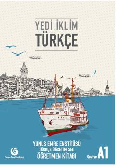

YİTurk tilini chet tili sifatida o'qitish uchun mo'ljallangan A1 darajasidagi o'qituvchi qo'llanmasi.
Ushbu qo'llanma chet tili sifatida turk tilini o'rganishni boshlaganlar uchun mo'ljallangan Yedi İklim Türkçe A1 o'quv dasturining o'qituvchi kitobidir. Kitobda darslarni tashkil etish, grammatik qoidalarni tushuntirish va o'quvchilarning tinglab tushunish, o'qish, yozish hamda gapirish ko'nikmalarini rivojlantirish bo'yicha metodik tavsiyalar berilgan. Yunus Emre Enstitüsü tomonidan tayyorlangan ushbu nashr o'qituvchilarga dars jarayonini samarali olib borishda yordam beradi.